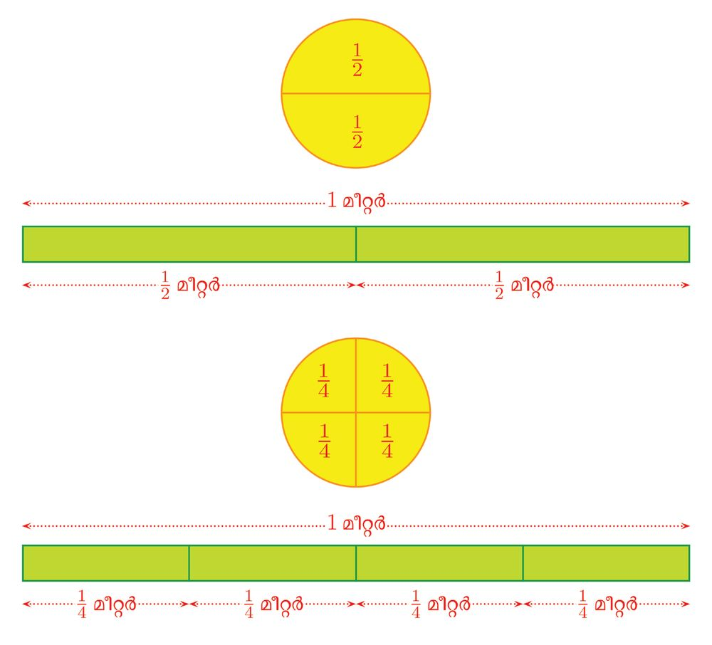
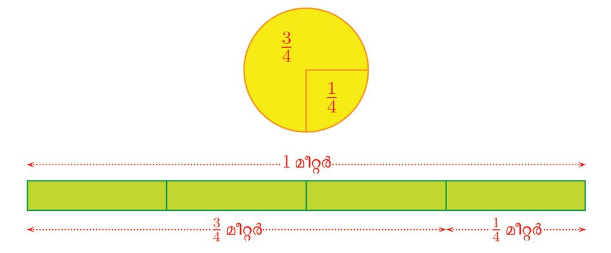
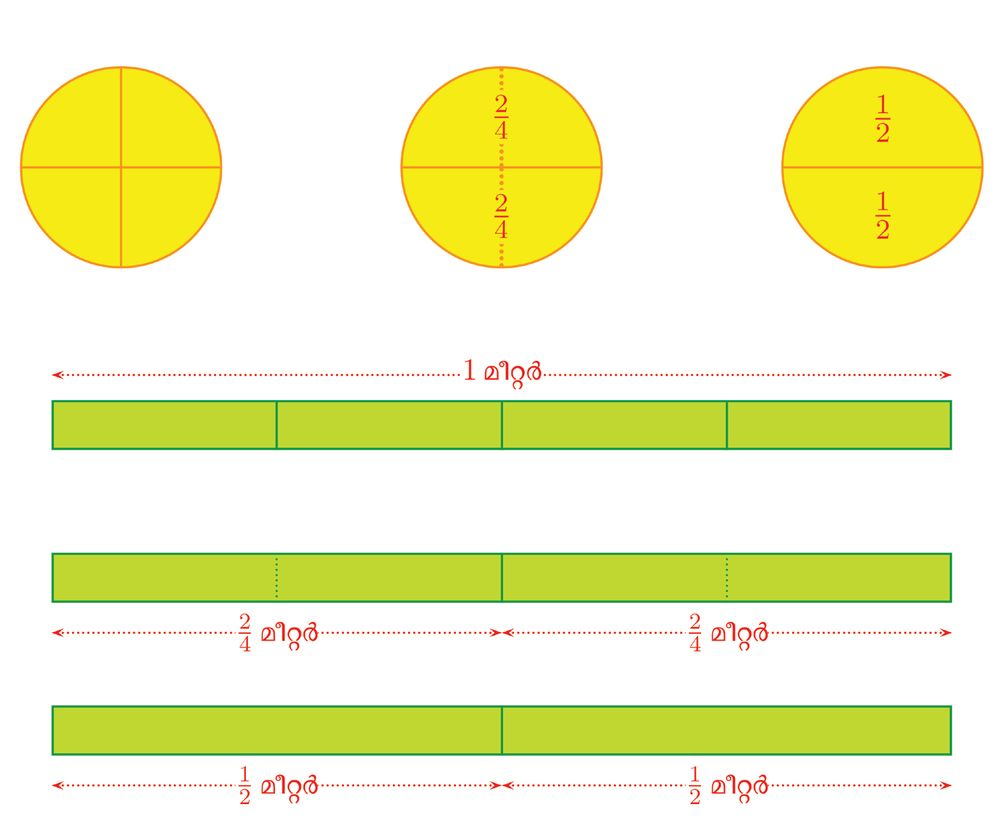
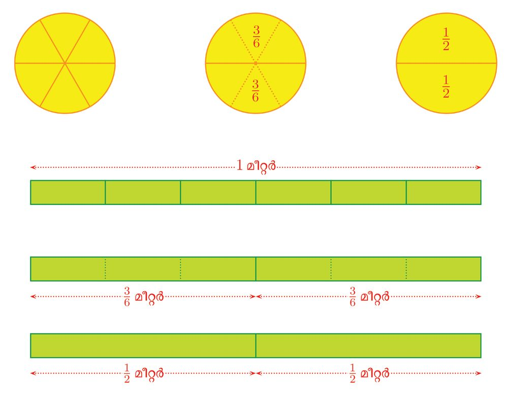
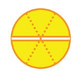
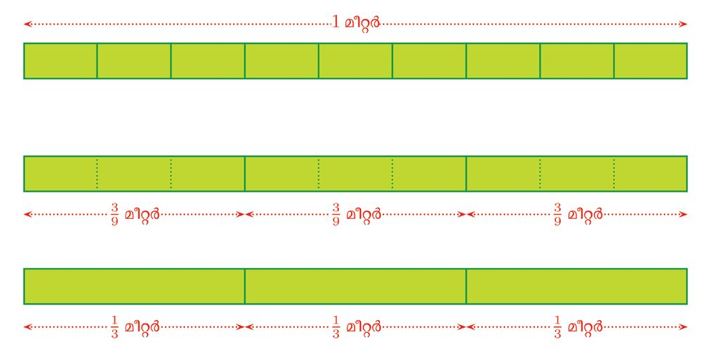
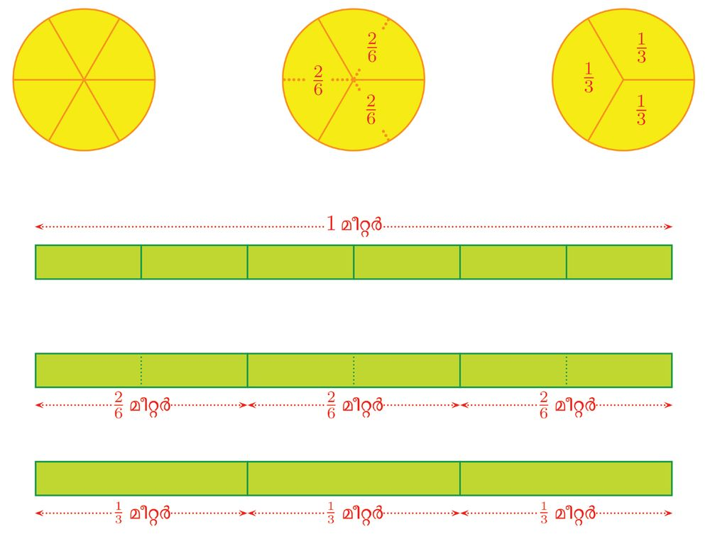
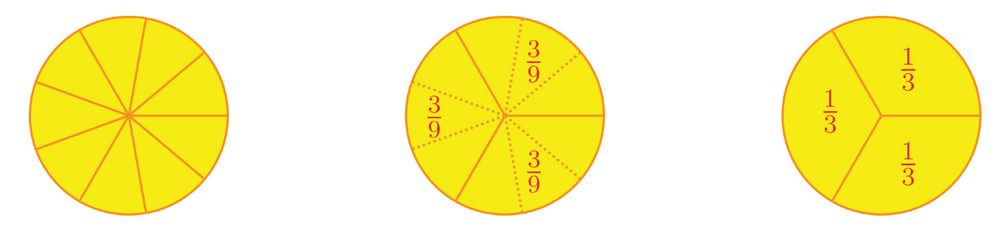
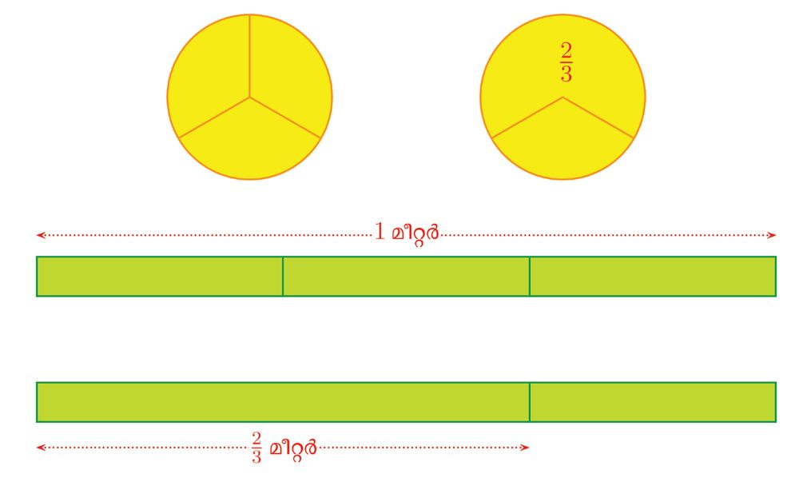
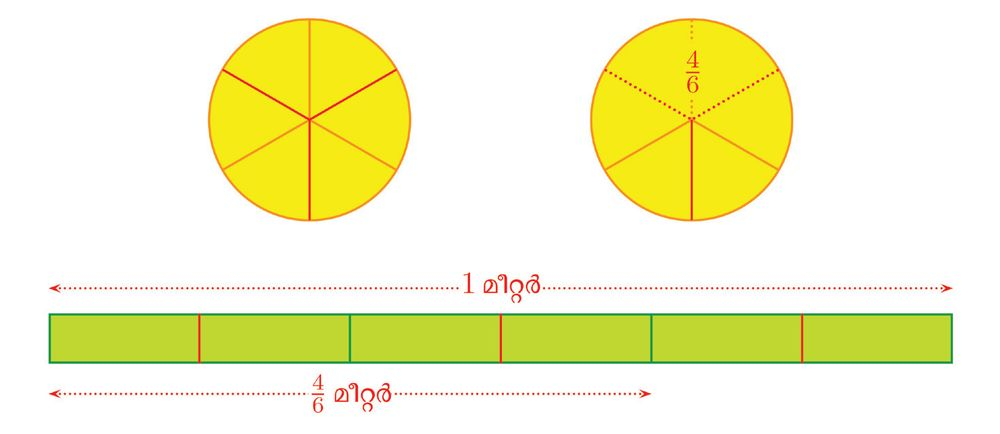

ഒരു ഭിന്നം പല രൂപം
2
അംശവും ഛേദവും അളവുകളുടെ ഭാഗങ്ങളെ ഭിന്നസംഖ്യയകളായി എഴുതുന്നത് അഞ്ചാം ക്ലാസിൽ കണ്ടല്ലോോ.
19


ഒരു ഭിന്നം പല രൂപം
2
അംശവും ഛേദവും അളവുകളുടെ ഭാഗങ്ങളെ ഭിന്നസംഖ്യയകളായി എഴുതുന്നത് അഞ്ചാം ക്ലാസിൽ കണ്ടല്ലോോ.
19



സ്റ്റാൻഡേർഡ് VI ഗണിതം
പല രൂപത്തിലുള്ള ഭിന്നസംഖ്യയകൾ ഒരേ അളവാകാം എന്നും കണ്ടു. ഉദാഹരണമായി 24 ഉം 1 2 ഉം ഒരേ ഭാഗംതന്നെ.
20



ഒരു ഭിന്നം പല രൂപം
ഇതുപോോലെ 36 ഉം 12 തന്നെ എന്നും കണ്ടിട്ടുണ്ടല്ലോോ:
അതായത്, 1 = 2
2 = 4
3 6
എങ്ങനെയാണ് 12 ന്റെ പല രൂപങ്ങൾ കിട്ടുന്നത് ? •
ഒരു വസ്തുവിനെയോോ അളവിനെയോോ രണ്ട് സമഭാഗങ്ങളാക്കിയാൽ ഓരോോന്നും മുഴുവന്റെ 1 2 ഭാഗം.
• രണ്ട് സമഭാഗങ്ങളിൽ ഒരോോന്നിനെയും വീണ്ടും രണ്ട് സമഭാഗങ്ങളാക്കിയാലോോ ? ∗ ആകെ 2 × 2 = 4 സമഭാഗങ്ങൾ; ∗ മുഴുവന്റെ 12 ഭാഗം കിട്ടാൻ ഇവയിലെ 2 എണ്ണമെടുക്കണം. ∗
1 = 2 2 4
21



സ്റ്റാൻഡേർഡ് VI ഗണിതം
• രണ്ട് സമഭാഗങ്ങളിൽ ഓരോോന്നിനെയും മൂന്ന് സമഭാഗങ്ങളാക്കിയാലോോ ? ∗ ആകെ 2 × 3 = 6 ഭാഗങ്ങൾ; ∗ മുഴുവന്റെ 12 ഭാഗം കിട്ടാൻ ഇവയിലെ 3 എണ്ണമെടുക്കണം. ∗
1 = 3 2 6
ഇങ്ങനെ എത്ര വേണമെങ്കിലും തുടരാം. ഉദാഹരണമായി, രണ്ട് സമഭാഗങ്ങളിൽ ഓരോോന്നിനെയും 50 സമഭാഗങ്ങളാക്കിയാലോോ ? ആകെ 2 × 50 = 100 സമഭാഗങ്ങൾ മുഴുവന്റെ 12 ഭാഗം കിട്ടാൻ ഇവയിൽ എത്ര എണ്ണമെടുക്കണം ? ഇതിൽനിന്നു കിട്ടുന്ന 12 ന്റെ മറ്റൊൊരു രൂപം എന്താണ് ? 50 100
എന്ന ഭിന്നസംഖ്യയയിൽ, ചുവട്ടിലെ 100 എന്ന സംഖ്യയ, ആകെ എത്ര സമഭാഗങ്ങളായി മുറിച്ചു എന്നതിനെയാണ് കാണിക്കുന്നത്; മുകളിലെ സംഖ്യയയായ 50 എത്ര സമഭാഗങ്ങൾ എടുത്തു എന്നതിനെയും. 50 മുറിക്കുക എന്നതിന് ഛേദിക്കുക എന്നും പറയാം. അതിനാൽ 100 എന്ന സംഖ്യയയെ, 100 ന്റെ ഛേദം (Denominator) എന്നാണ് പറയുന്നത്. ഭാഗത്തിന് അംശം എന്നും പറയാറുള്ളതിനാൽ, 50 50 നെ 100 ന്റെ അംശം (Numerator) എന്നും പറയുന്നു.
അപ്പോോൾ 12 എന്ന ഭിന്നസംഖ്യയയുടെ പല രൂപങ്ങളായ 1 2 3 4 2 , 4 , 6 , 8 , ...
എന്നിവയിലെ ഛേദങ്ങൾ 2, 4, 6, 8, ... എന്നിങ്ങനെ 2 ന്റെ ഗുണിതങ്ങളാണ്; അംശങ്ങൾ 1, 2, 3, 4, ... എന്നിങ്ങനെ 2 നെ ഗുണിച്ച സംഖ്യയകളുംം. ഇനി 13 ന്റെ കാര്യംം നോോക്കാം 1 2 3 ഉം 6 ഉം ഒരേ ഭാഗം തന്നെയാണെന്ന് കണ്ടിട്ടുണ്ടല്ലോോ:
22




ഒരു ഭിന്നം പല രൂപം
1 3
ഭാഗത്തിനെ മറ്റേതെല്ലാം രൂപത്തിൽ എഴുതാം ?
വൃത്തത്തെ 9 സമഭാഗങ്ങളാക്കിയാലോോ ? എത്ര ഭാഗങ്ങൾ എടുത്താൽ വൃത്തത്തിന്റെ 13 ഭാഗം കിട്ടുംം ?
ഇതുപോോലെ 1 മീറ്ററിനെ 9 സമഭാഗങ്ങളാക്കി 3 എണ്ണം എടുത്താൽ 13 മീറ്റർ കിട്ടുമല്ലോോ:
23

സ്റ്റാൻഡേർഡ് VI ഗണിതം 1 2 നെക്കുറിച്ച് പറഞ്ഞതുപോോലെ ഇതും തുടരാം.
•
ഒരു വസ്തുവിനെയോോ അളവിനെയോോ മൂന്ന് സമഭാഗങ്ങളാക്കിയാൽ ഓരോോന്നും മുഴുവന്റെ 1 3 ഭാഗം.
•
മൂന്ന് സമഭാഗങ്ങളിൽ ഓരോോന്നിനെയും വീണ്ടും രണ്ട് സമഭാഗങ്ങളാക്കിയാലോോ ? ∗ ആകെ 3 × 2 = 6 സമഭാഗങ്ങൾ; ∗ മുഴുവന്റെ 13 ഭാഗം കിട്ടാൻ ഇവയിലെ 2 എണ്ണമെടുക്കണം. ∗
1 = 2 3 6
• മൂന്ന് സമഭാഗങ്ങളിൽ ഓരോോന്നിനെയും വീണ്ടും മൂന്നു സമഭാഗങ്ങളാക്കിയാലോോ ? ∗ ആകെ 3 × 3 = 9 സമഭാഗങ്ങൾ ∗ മുഴുവന്റെ 13 ഭാഗം കിട്ടാൻ ഇവയിലെ 3 എണ്ണമെടുക്കണം. ∗
1 = 3 3 9
മൂന്ന് സമഭാഗങ്ങളിൽ ഓരോോന്നും 25 സമഭാഗങ്ങളാക്കിയാലോോ ? ആകെ എത്ര സമഭാഗങ്ങൾ ? അവയിൽ എത്രയെണ്ണം എടുത്താൽ, മുഴുവന്റെ 13 ഭാഗം കിട്ടുംം ? ഇതിൽ നിന്ന് കിട്ടുന്ന 13 ന്റെ മറ്റൊൊരു രൂപം എന്താണ് ? അപ്പോോൾ 13 എന്ന ഭിന്നസംഖ്യയയുടെ പല രൂപങ്ങളായ 1 2 3 4 3 , 6 , 9 , 12 , ... എന്നിവയിലെ ഛേദങ്ങൾ 3, 6, 9, 12, ... എന്നിങ്ങനെ 3 ന്റെ ഗുണിതങ്ങളാണ്. അംശങ്ങൾ 1, 2,
3, 4, ... എന്നിങ്ങനെ 3 നെ ഗുണിച്ച സംഖ്യയകളുംം.
(1) ചുവടെ പറയുന്ന ഭിന്നസംഖ്യയകൾ കണ്ടുപിടിക്കുക: (i) 12 ന്റെ 24 ഛേദമായ രൂപം. (ii) 12 ന്റെ 24 അംശമായ രൂപം. (iii) 13 ന്റെ 24 ഛേദമായ രൂപം. (iv) 13 ന്റെ 24 അംശമായ രൂപം. (v) 14 ന്റെ 100 അംശമായ രൂപം. (2) 14 ന്റെ മൂന്ന് വ്യയത്യയസ്ത രൂപങ്ങൾ എഴുതുക
24



ഒരു ഭിന്നം പല രൂപം
(3) ചുവടെ പറയുന്ന സംഖ്യാജോോടികളുടെ ഒരേ ഛേദമുള്ള മൂന്ന് രൂപം കണക്കാക്കുക: (i) 12 , 13
(ii) 12 , 14
(iii) 13 , 14
(4) 13 ന് 10, 100, 1000 എന്നിങ്ങനെയുള്ള ഏതെങ്കിലും ഛേദമായ രൂപം ഉണ്ടോോ ?
കാരണം പറയുക. മറ്റൊൊരു കണക്ക് നോോക്കാം: 2 3 ന്റെ പല രൂപങ്ങൾ എങ്ങനെ കണക്കാക്കാം ?
ഒരു വസ്തുവിനെയോോ അളവിനെയോോ 3 സമഭാഗങ്ങളാക്കിയതിൽ 2 എണ്ണം ചേർന്നതാണല്ലോോ 32 .
മൂന്ന് സമഭാഗങ്ങളിൽ ഓരോോന്നിനെയും 2 സമഭാഗങ്ങളാക്കിയാലോോ ?
25


സ്റ്റാൻഡേർഡ് VI ഗണിതം
ആകെ 3 × 2 = 6 സമഭാഗങ്ങൾ. നേരത്തെയെടുത്ത 2 വലിയ സമഭാഗങ്ങൾ ഇപ്പോോൾ 2 × 2 = 4 ചെറിയ സമഭാഗങ്ങളായി. അതായത് മൊൊത്തം ഭാഗങ്ങളുടെ എണ്ണം രണ്ട് മടങ്ങായപ്പോോൾ, എടുത്ത ഭാഗങ്ങളുടെ എണ്ണവും രണ്ട് മടങ്ങായി. 2 = 4 3 6
ഇതും തുടരാമല്ലോോ. ആദ്യയത്തെ 3 സമഭാഗങ്ങൾ ഓരോോന്നിനെയും വീണ്ടും 3 സമഭാഗങ്ങളാക്കി യാലോോ ? •
ആകെ 3 × 3 = 9 സമഭാഗങ്ങൾ.
•
ആദ്യയമെടുത്ത 2 സമഭാഗങ്ങൾ 2 × 3 = 6 സമഭാഗങ്ങളാകും.
അതായത് മൊൊത്തം ഭാഗങ്ങളുടെ എണ്ണം മൂന്ന് മടങ്ങായപ്പോോൾ, എടുത്ത ഭാഗങ്ങളുടെ എണ്ണവും മൂന്ന് മടങ്ങായി. അപ്പോോൾ 32 ന്റെ പല രൂപങ്ങളിലെല്ലാം, ഛേദം 3 ന്റെ ഗുണിതങ്ങളാണ്; അംശങ്ങൾ 3 നെ ഗുണിച്ച സംഖ്യയകൾകൊൊണ്ട് 2 നെ ഗുണിച്ചതും. ഇതുപോോലെ ഏത് ഭിന്നസംഖ്യയയുടെയും വ്യയത്യയസ്തരൂപങ്ങൾ കണക്കാക്കാമല്ലോോ. പൊൊതുവായി ഇങ്ങനെ പറയാം: ഏത് ഭിന്നസംഖ്യയയുടെയും അംശത്തെയും ഛേദത്തെയും ഒരേ എണ്ണൽസംഖ്യയകൊൊണ്ട് ഗുണിച്ചാൽ, ആ ഭിന്നസംഖ്യയയുടെ തന്നെ ഒരു രൂപമാകും. അംശത്തെയും ഛേദത്തെയും ഒരേ സംഖ്യയകൊൊണ്ട് ഗുണിച്ച്, ഈ പട്ടിക പൂരിപ്പിക്കുമല്ലോോ ? ഭിന്നം
ഗുണിക്കുന്ന സംഖ്യയ
അംശം
ഛേദം
മറ്റൊൊരു രൂപം
2 3
4
8
12
2 = 8 3 12
2 3
6 12
3 4 3 4
26
12

ഒരു ഭിന്നം പല രൂപം
മറ്റൊൊരുതരം കണക്ക് നോോക്കാം: 10 15
എന്ന ഭിന്നസംഖ്യയയെ എഴുതാമോോ ?
അംശവും ഛേദവും ചെറുതാക്കി, മറ്റൊൊരു രൂപത്തിൽ
10 നും 15 നും 5 ഘടകമാണല്ലോോ: 10 = 5 × 2
15 = 5 × 3
അതായത് 2 നെയും 3 നെയും ഒരേ സംഖ്യയ 5 കൊൊണ്ട് ഗുണിച്ചു കിട്ടുന്നവയാണ് 10 ഉം 15 ഉം അപ്പോോൾ, മുകളിൽ കണ്ടതനുസരിച്ച്, 10 = 2 15 3 18 24 നെ ഇതുപോോലെ എഴുതുന്നതെങ്ങനെ ?
18 ഉം 24 ഉം ഇരട്ടസംഖ്യയകളല്ലേ ? അതായത് രണ്ടിനും 2 ഒരു ഘടകമാണ്: 18 = 2 × 9 24 = 2 × 12
അപ്പോോൾ, മുകളിൽ കണ്ടതനുസരിച്ച്, 18 = 9 24 12
9 നും 12 നും പൊൊതുവായി ഏതെങ്കിലും ഘടകമുണ്ടോോ ? 3 ഒരു ഘടകമാണല്ലോോ. അപ്പോോൾ, 9 = 3 12 4
അതായത്, 18 = 24
9 = 12
3 4
ഇങ്ങനെ ഏത് ഭിന്നസംഖ്യയയിലും അംശത്തിനും ഛേദത്തിനും ഒരേ ഘടകമുണ്ടെങ്കിൽ, അതൊൊ ഴിവാക്കി, അംശവും ഛേദവും ചെറുതായ മറ്റൊൊരു രൂപം കണക്കാക്കാം. ഇക്കാര്യംം പൊൊതുവായി ഇങ്ങനെ പറയാം: ഒരു ഭിന്നസംഖ്യയയുടെ അംശത്തിനും ഛേദത്തിനും ഒരു പൊൊതുഘടകമുണ്ടെങ്കിൽ, അതുകൊൊണ്ട് അംശത്തിനെയും ഛേദത്തിനെയും ഹരിച്ചാൽ അതേ ഭിന്നസംഖ്യയയുടെ ഒരു രൂപം കിട്ടുംം. മുകളിലെ ഉദാഹരണത്തിൽ 18 24 നെ ആദ്യംം അംശത്തെയും ഛേദത്തെയും 2 കൊൊണ്ട് ഹരിച്ച് 9 12 എന്നെഴുതി; പിന്നീട് അംശത്തെയും ഛേദത്തെയും 3 കൊൊണ്ട് ഹരിച്ച് വീണ്ടും ചെറു താക്കി 34 എന്നെഴുതി. ഛേദവും അംശവും ഇനിയും ചെറുതാക്കാൻ കഴിയില്ലല്ലോോ ? എന്തുകൊൊണ്ട് ? അതിനാൽ 34 നെ 18 24 ന്റെ ലഘുരൂപം (in lowest terms) എന്നാണ് പറയുന്നത്.
27


സ്റ്റാൻഡേർഡ് VI ഗണിതം
പൊൊതുവേ പറഞ്ഞാൽ, ഒരു ഭിന്നസംഖ്യയയുടെ, ഛേദത്തിന്റെയും അംശത്തിന്റെയും പൊൊതുവായ ഘടകങ്ങളെല്ലാം ഹരിച്ചു മാറ്റിയാൽ കിട്ടുന്നതാണ് അതിന്റെ ലഘുരൂപം. ചുവടെയുള്ള ഭിന്നസംഖ്യയകളുടെ ലഘുരൂപം കണക്കാക്കുക: (i) 32 64
27 (ii) 81
(iii) 30 45
45 (iv) 12 21 (v) 54
ഹരണക്കണക്കുകൾ 2 മീറ്റർ നീളമുള്ള കയർ 3 സമഭാഗങ്ങളാക്കിയാൽ ഓരോോ കഷണത്തിന്റെയും നീളം എത്ര യാണ് ? ഓരോോ കഷണത്തിന്റെയും നീളം 32 മീറ്റർ എന്ന് അഞ്ചാം ക്ലാസിൽ കണ്ടിട്ടുണ്ടല്ലോോ. (ഭിന്നസംഖ്യയകൾ എന്ന പാഠത്തിലെ ഭിന്നവീതം എന്ന ഭാഗം). 6 മീറ്റർ നീളമുള്ള കയറാണ് 3 സമഭാഗങ്ങളാക്കുന്നതെങ്കിലോോ ?
ഇത് കണക്കാക്കുന്നത് ഹരണമായിട്ടല്ലേ ? 6÷3=2
ആദ്യയത്തെ കണക്കിലെപ്പോോലെ ഇതും ഭിന്നമായി എഴുതാം എന്നും അഞ്ചാംക്ലാസിൽ കണ്ടു (ഭിന്നസംഖ്യയകൾ എന്ന പാഠത്തിലെ ഭിന്നവും ഹരണവും എന്ന ഭാഗം). അതായത്, 6 ÷ 3 = 63 = 2
ഇതുപോോലെ ഏതു ഹരണത്തെയും ഭിന്നരൂപത്തിൽ എഴുതാം. ഉദാഹരണമായി, 8÷2 = 4 15 ÷ 3 = 5 30 ÷ 10 = 3
8 2 = 4 15 3 = 5 30 10 = 3
ഏത് എണ്ണൽസംഖ്യയയെയും 1 കൊൊണ്ടുഹരിച്ചാൽ ആ സംഖ്യയതന്നെ കിട്ടുംം എന്നതിനാൽ, എല്ലാ എണ്ണൽസംഖ്യയകളെയും ഭിന്നമായും എഴുതാം: 1÷1 = 1 2÷1 = 2 3÷1 = 3
1 = 11 2 = 12 3 = 13
ഇവിടെ ഒരു ചോോദ്യയമുണ്ട്. ഇങ്ങനെ ഹരണമായി എഴുതുന്ന ഭിന്നസംഖ്യയകളിലും, നേരത്തെ പറഞ്ഞതുപോോലെ അംശത്തിലെയും ഛേദത്തിലെയും പൊൊതുഘടകങ്ങൾ ഒഴിവാക്കാൻ കഴിയുമോോ ?
28


ഒരു ഭിന്നം പല രൂപം
ഇങ്ങനെ ചെയ്യാമെന്ന് അഞ്ചാംക്ലാസിൽ കണ്ടിട്ടുണ്ട് (സംഖ്യയകൾക്കുള്ളിൽ എന്ന പാഠത്തിലെ പൊൊതുഘടകങ്ങൾ എന്ന ഭാഗം). ഉദാഹരണമായി, 12 ÷ 6 കണക്കാക്കാൻ, ആദ്യംം ഈ സംഖ്യയകളെ ഇങ്ങനെ എഴുതാം: 12 = 2 × 6 6 = 2×3
തുടർന്ന് പൊൊതുഘടകമായ 2 ഒഴിവാക്കി, ഹരണം ഇങ്ങനെയാക്കാം: 12 ÷ 6 = 6 ÷ 3 = 2
ഈ കണക്കുകൾ ഭിന്നസംഖ്യാരൂപത്തിൽ ഇങ്ങനെ എഴുതാം: 12 = 6
2 # 6 = 2 # 3
6 = 2 3
അപ്പോോൾ എണ്ണൽസംഖ്യയകളെ ഭിന്നസംഖ്യാരൂപത്തിൽ എഴുതുന്നത് പലതരത്തിലാവാം: 1 2 = 1 = = 1 2 2 4 = 2 = = 1 2 3 6 = 3 = = 1 2
3 = ... 3 6 = ... 3 9 = ... 3
മിച്ചം വരുന്ന ഹരണങ്ങളെയും ഭിന്നസംഖ്യയകളായി എഴുതാമെന്നും അഞ്ചാംക്ലാസിൽ കണ്ടു (ഭിന്നസംഖ്യയകൾ എന്ന പാഠത്തിലെ പുതിയ ഭിന്നങ്ങൾ എന്ന ഭാഗം). ഉദാഹരണമായി, 3 കേക്ക് 2 കുട്ടികൾക്ക് ഒരുപോോലെ വീതിച്ചാൽ, ഓരോോരുത്തർക്കും കിട്ടുന്നത് ഒരു മുഴുവൻ കേക്കും, ഒരു കേക്കിന്റെ പകുതിയുമാണല്ലോോ; അതായത് 1 12 1 12 കേക്ക്. ഇതും ഭിന്നമായി എഴുതാം: 3 ÷ 2 = 32 = 1 12
ഇത്തരം ഭിന്നസംഖ്യയകളിലും, നേരത്തെ പറഞ്ഞതുപോോലെ അംശത്തിലെയും ഛേദത്തിലെയും പൊൊതുഘടകങ്ങൾ ഒഴിവാക്കാൻ കഴിയുമോോ ? ഉദാഹരണമായി ഈ കണക്ക് നോോക്കുക: 6 കേക്ക് 4 കുട്ടികൾക്ക് ഒരുപോോലെ വീതിച്ചാൽ ഓരോോരുത്തർക്കും എത്ര കിട്ടുംം ?
29


സ്റ്റാൻഡേർഡ് VI ഗണിതം
ഓരോോരുത്തർക്കും ഒരു കേക്ക് വീതം കൊൊടുത്തു കഴിഞ്ഞാൽ 2 കേക്ക് മിച്ചം.
ഇതോോരോോന്നും പകുതിയാക്കിയാൽ 4 കഷണം, ഓരോോന്നും ഒരു കേക്കിന്റെ 12 ഭാഗം.
ഈ കഷണങ്ങളുംം ഓരോോന്നു വീതം കൊൊടുത്തുകഴിഞ്ഞാൽ, ഓരോോരുത്തർക്കും 1 12 കേക്ക്.
30


ഒരു ഭിന്നം പല രൂപം
ഇത് മറ്റൊൊരു വിധത്തിലും കാണാം. 6 കേക്ക് 4 കുട്ടികൾക്ക് വീതിക്കാൻ, കുട്ടികളെ 2 പേർ വീതമുള്ള 2 കൂട്ടമാക്കി, ഓരോോ കൂട്ടത്തി
നും 3 കേക്ക് വീതം കൊൊടുത്താൽപ്പോോരേ ?
ഓരോോ കൂട്ടത്തിലും 2 കുട്ടികൾക്ക് ഓരോോ കേക്ക് വീതം കൊൊടുത്തുകഴിഞ്ഞാൽ, ഒരു കേക്ക് വീതം മിച്ചം വരുംം.
ഓരോോ കൂട്ടത്തിലും മിച്ചം വരുന്ന ഒരു കേക്കും പകുതിയാക്കി വീതിച്ചാൽ, ഓരോോരുത്തർക്കും 1 1 2 കേക്ക് വീതം:
ഇവിടെ കണ്ടത് എന്താണ് ? 6 = 4
3 1 = 12 2
31


സ്റ്റാൻഡേർഡ് VI ഗണിതം
മറ്റൊൊരു കണക്ക് നോോക്കാം: 33 ലിറ്റർ പാൽ 12 പേർക്ക് ഒരുപോോലെ വീതിച്ചാൽ ഓരോോരുത്തർക്കും എത്ര ലിറ്റർ കിട്ടുംം ? ഇതിൽ 33 നെയും 12 നെയും ഇങ്ങനെ പിരിച്ചെഴുതാമല്ലോോ ? 33 = 3 × 11
12 = 3 × 4
അപ്പോോൾ കഴിഞ്ഞ കണക്കിൽ അവസാനം ചെയ്തതുപോോലെ ഇങ്ങനെ ആലോോചിക്കാം. 12 ആളുകളെ 4 പേർ വീതമുള്ള 3 കൂട്ടങ്ങളാക്കി, ഓരോോ കൂട്ടത്തിനും 11 ലിറ്റർ വീതം കൊൊടു ക്കുക. ഓരോോ കൂട്ടത്തിലുമുള്ള 4 പേർ അവർക്ക് കിട്ടിയ 11 ലിറ്റർ വീതിച്ചെടുക്കുമ്പോോൾ, ഓരോോരുത്തർ ക്കും 11 4 ലിറ്റർ. അതായത്, 33 = 11 12 4
ഇനി 11 4 നെ പൂർണ്ണസംഖ്യയയും ഭിന്നവുമായി പിരിച്ചെഴുതുന്നതെങ്ങനെ ? ആദ്യംം 11 നെ 4 കൊൊണ്ടു ഹരിച്ച്, മടങ്ങും മിച്ചവുമായി എഴുതാം. 11 = (4 × 2) + 3
മിച്ചം വരുന്ന 3 നെയും 4 കൊൊണ്ട് ഹരിച്ച്, ഇങ്ങനെ എഴുതാമല്ലോോ 3 ÷ 4 = 34 അപ്പോോൾ, 33 = 12
11 = 4
3
24
അതായത് ഓരോോരുത്തർക്കും 2 34 ലിറ്റർ പാൽ വീതം കിട്ടുംം. പൊൊതുവേ പറഞ്ഞാൽ, ഇത്തരം ഭിന്നസംഖ്യയകളിലും, അംശത്തിലും ഛേദത്തിലുമുള്ള പൊൊതു ഘടകങ്ങൾ ഒഴിവാക്കിയാൽ അതേ ഭിന്നസംഖ്യയയുടെ വേറൊൊരു രൂപം കിട്ടുംം. മറ്റൊൊരു വിധത്തിൽ പറഞ്ഞാൽ, മിച്ചം വരുന്ന ഹരണങ്ങളെയും ഭിന്നസംഖ്യയകളായി എഴുതു മ്പോോൾ, അംശത്തിലെയും ഛേദത്തിലെയും പൊൊതുഘടകങ്ങൾ ഒഴിവാക്കാം.
(1) 20 ലിറ്റർ വെള്ളം, ഒരുപോോലെയുള്ള 8 കുപ്പികളിൽ നിറച്ചു. ഓരോോ കുപ്പിയിലും എത്ര
ലിറ്റർ വെള്ളം ഉണ്ട് ? (2) 140 സെന്റിമീറ്റർ നീളമുള്ള കയർ, ഒരേ നീളമുള്ള 16 കഷണങ്ങളായി മുറിച്ചു. ഓരോോ
കഷണത്തിന്റെയും നീളം എത്രയാണ് ? (3) 215 കിലോോഗ്രാം അരി 15 പേർക്ക് ഒരുപോോലെ വീതിച്ചാൽ, ഓരോോരുത്തർക്കും എത്ര
കിലോോഗ്രാം അരി കിട്ടുംം ?
32